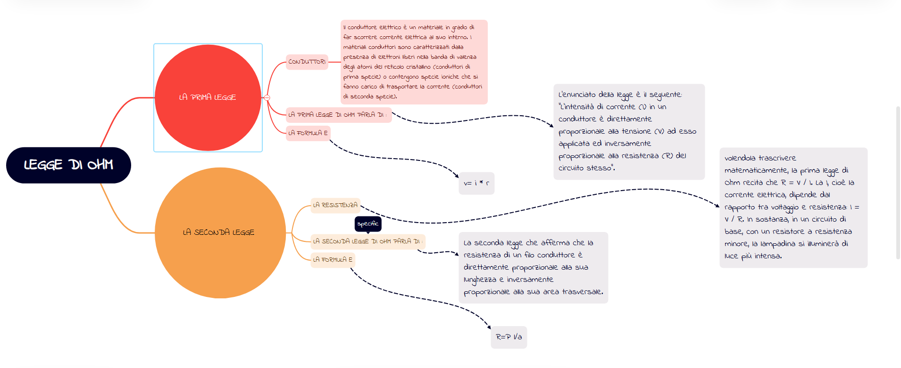

Definizione della Legge di Ohm
La legge di Ohm stabilisce che la corrente che attraversa un conduttore tra due punti è direttamente proporzionale alla tensione tra i due punti e inversamente proporzionale alla resistenza del conduttore. La formula della legge di Ohm è:
V = I * R, dove:
- V è la tensione in Volt (V)
- I è l'intensità di corrente in Ampere (A)
- R è la resistenza in Ohm (Ω)
Mappa Concettuale
Breve Biografia di Georg Simon Ohm
Georg Simon Ohm (1789-1854) fu un fisico tedesco noto per la formulazione della legge che porta il suo nome, la legge di Ohm. Questa legge ha rivoluzionato la comprensione dei fenomeni elettrici, contribuendo in modo fondamentale all'elettronica moderna. Ohm lavorò con circuiti elettrici e studiò il comportamento dei materiali conduttori. La sua scoperta si è rivelata essenziale per lo sviluppo della teoria elettrica.

Calcolatore della Legge di Ohm
Inserisci i valori di due variabili per calcolare la terza.